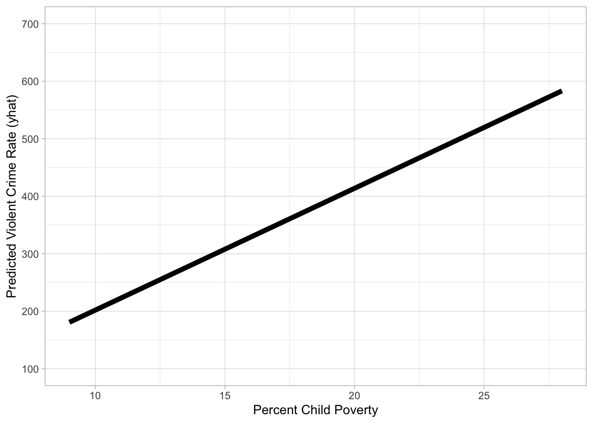

remotes::install_github("dstanley4/fastInteraction")4 Multiple Linear Regression Models
4.1 Required packages
The following CRAN packages must be installed:
| Required CRAN Packages |
|---|
| tidyverse |
| usethis |
| janitor |
| skimr |
| apaTables |
| broom |
| corrr |
| tidymodels |
| remotes |
| relaimpo |
| psych |
REMINDER:
Never use the command library(psych). Instead use psych:: before each command.
Never use the command library(relaimpo). Instead use relaimpo:: before each command.
The following GitHub packages must be installed:
| Required GitHub Packages |
|---|
| dstanley4/fastInteraction |
After the remotes package is installed, it can be used to install a package from GitHub:
4.2 Page 66 Correlations
4.2.1 Activate packages
library(usethis) # use_github_file()
library(tidyverse) # read_csv()
library(janitor) # clean_names() 4.2.2 Obtain data and save it to your computer
use_github_file(repo_spec = "https://github.com/johnhoffmannVA/LinearRegression/blob/main/StateData2018.csv",
save_as = "statedata2018.csv")4.2.2.1 Load data from your computer
Clean names is essential here. It makes sure all column names are lower case. They are not all lower case in the original data file.
statedata2018 <- read_csv("statedata2018.csv") %>%
clean_names()4.2.3 Inspect data
There are so many column names in this data set that we do the glimpse a bit differently. That is, we sort the order of the columns alphabetically prior to doing the glimpse(). It affects only the display of the column names - not the structure of the data.
statedata2018 %>%
select(sort(names(statedata2018))) %>%
glimpse() Rows: 50
Columns: 77
$ aa_voted_percent <dbl> 49.6, NA, 50.9, 41.6, 49.9, 31.0, 48.3, 55.…
$ alc_disorder_past_year <dbl> 4.51, 6.57, 5.49, 5.38, 5.51, 6.30, 6.10, 6…
$ assault_rate <dbl> 283.4, 440.2, 252.1, 346.0, 236.6, 192.8, 1…
$ assoc_degree <dbl> 8.2, 8.5, 8.4, 6.7, 7.7, 8.6, 7.5, 7.9, 9.7…
$ bach_degree <dbl> 15.4, 19.0, 18.1, 14.2, 20.6, 24.9, 21.9, 1…
$ binge_alc_past_month <dbl> 21.40, 24.20, 23.10, 19.49, 23.52, 26.97, 2…
$ burglary_rate <dbl> 819.0, 427.6, 647.1, 835.7, 522.3, 438.2, 3…
$ census_division <chr> "EastSouthCentral", "Pacific", "Mountain", …
$ census_region <chr> "South", "West", "West", "South", "West", "…
$ comm_supervision_rate <dbl> 1591.14, 1522.95, 1503.95, 2222.08, 1088.59…
$ community_supervision <dbl> 60700, 8400, 84800, 51500, 333300, 90900, 4…
$ conservative <dbl> 26.00835, 19.27924, 20.40239, 25.04501, 17.…
$ cost_living <dbl> 89.3, 129.9, 97.0, 86.9, 151.7, 105.6, 127.…
$ death_row <dbl> 177, 0, 120, 32, 727, 3, 0, 0, 348, 49, 0, …
$ death_row_rate <dbl> 4.33, 0.00, 2.18, 1.33, 3.59, 0.09, 0.00, 0…
$ doctoral_degree <dbl> 1.0, 1.2, 1.2, 0.9, 1.6, 1.6, 1.6, 1.8, 1.1…
$ dom_mig_rate <dbl> 1.17, -14.58, 11.61, 0.82, -3.95, 7.60, -6.…
$ dom_migration <dbl> 5718, -10752, 83240, 2475, -156068, 43293, …
$ fips_code <dbl> 1, 2, 4, 5, 6, 8, 9, 10, 12, 13, 15, 16, 17…
$ gross_state_product <dbl> 211197, 51479, 326446, 122704, 2797601, 345…
$ guns <dbl> 161641, 15824, 179738, 79841, 344622, 92435…
$ guns_per_capita <dbl> 33.15, 21.38, 25.61, 26.57, 8.71, 16.48, 22…
$ health_exp_per_capita <dbl> 7281, 11064, 6452, 7408, 7549, 6804, 9859, …
$ illicit_disorder_past_year <dbl> 2.86, 3.69, 2.79, 2.80, 2.97, 3.43, 3.47, 3…
$ illicit_drugs_past_month <dbl> 8.67, 16.81, 10.77, 10.51, 13.11, 17.83, 12…
$ infant_mortality_rate <dbl> 9.03, 5.17, 5.32, 8.20, 4.22, 4.76, 4.78, 7…
$ intern_mig_rate <dbl> 0.68, 3.26, 2.00, 0.75, 2.98, 1.44, 4.62, 1…
$ intern_migration <dbl> 3344, 2401, 14335, 2260, 117797, 8207, 1649…
$ larceny_rate <dbl> 2149.5, 2096.4, 2289.1, 2313.5, 1527.4, 185…
$ latinx_voted_percent <dbl> 29.1, NA, 48.8, 20.8, 43.3, 43.9, 41.1, NA,…
$ life_expectancy <dbl> 75.0, 77.8, 79.2, 75.5, 81.0, 80.0, 80.7, 7…
$ life_satis <dbl> 51.42162, 52.08266, 51.38469, 52.34836, 51.…
$ masters_degree <dbl> 6.9, 7.6, 7.8, 5.9, 8.4, 10.9, 12.1, 8.9, 7…
$ med_hh_income <dbl> 48486, 76715, 56213, 45726, 71228, 68811, 7…
$ median_age <dbl> 39.0, 33.5, 37.5, 38.0, 36.4, 36.7, 40.9, 4…
$ mental_illness_past_year <dbl> 19.95, 20.32, 18.02, 20.73, 18.18, 19.86, 1…
$ motor_vehicle_theft_rate <dbl> 209.1, 236.0, 261.3, 188.8, 391.3, 234.8, 1…
$ murder_ms_rate <dbl> 5.7, 5.6, 4.7, 5.6, 4.4, 2.8, 2.4, 5.8, 5.8…
$ opioid_od_death_rate <dbl> 9.0, 13.9, 13.5, 6.5, 5.3, 10.0, 27.7, 27.8…
$ pain_pill_past_year <dbl> 4.53, 4.81, 4.27, 5.03, 4.30, 4.87, 4.21, 4…
$ per_age0_18 <dbl> 24, 27, 24, 25, 24, 24, 22, 22, 21, 26, 23,…
$ per_age19_25 <dbl> 9, 9, 9, 9, 9, 9, 8, 8, 8, 9, 7, 9, 9, 9, 9…
$ per_age26_34 <dbl> 12, 13, 12, 12, 14, 14, 11, 12, 12, 12, 12,…
$ per_age35_54 <dbl> 25, 26, 24, 25, 26, 26, 27, 25, 25, 27, 25,…
$ per_age55_64 <dbl> 14, 13, 12, 13, 12, 13, 15, 14, 14, 12, 13,…
$ per_age65plus <dbl> 17, 12, 18, 17, 14, 14, 17, 19, 21, 14, 19,…
$ per_am_ind_alaskan <dbl> 1.0, 16.0, 4.0, 1.0, 1.0, 1.0, 0.5, 0.5, 0.…
$ per_asian <dbl> 1, 6, 3, 2, 15, 3, 5, 4, 3, 4, 38, 2, 6, 2,…
$ per_black <dbl> 26.0, 3.0, 4.0, 15.0, 5.0, 4.0, 10.0, 21.0,…
$ per_cap_income <dbl> 26846, 35874, 29265, 25635, 35021, 36415, 4…
$ per_child_poverty <dbl> 24, 13, 20, 24, 17, 12, 14, 17, 19, 20, 12,…
$ per_latinx <dbl> 4, 7, 32, 8, 39, 22, 17, 9, 26, 10, 10, 13,…
$ per_pop_change2010_18 <dbl> 2.254, 3.828, 12.192, 3.354, 6.181, 13.247,…
$ per_poverty <dbl> 16.89, 11.11, 14.86, 16.40, 13.30, 10.29, 9…
$ per_white <dbl> 66, 60, 54, 72, 37, 68, 66, 62, 53, 52, 21,…
$ percent_uninsured <dbl> 12.0, 14.3, 12.7, 9.8, 8.3, 8.6, 6.2, 6.8, …
$ pop_change2010_18 <dbl> 107733, 27189, 779358, 97797, 2302522, 6662…
$ pop_density <dbl> 95.4, 1.3, 58.3, 56.9, 246.1, 50.8, 742.6, …
$ pop18and_older <dbl> 3814879, 551562, 5638481, 2317649, 30617582…
$ population <dbl> 4887871, 737438, 7171646, 3013825, 39557045…
$ prison_rate <dbl> 1072.12, 797.73, 975.44, 1035.53, 662.04, 7…
$ prisoners <dbl> 40900, 4400, 55000, 24000, 202700, 32100, 1…
$ professional_degree <dbl> 1.5, 1.8, 1.8, 1.3, 2.4, 2.3, 3.0, 1.9, 2.1…
$ prop_crime_rate <dbl> 3177.6, 2760.0, 3197.5, 3338.0, 2441.1, 253…
$ rape_rate <dbl> 41.3, 104.7, 50.2, 59.4, 29.7, 56.7, 21.7, …
$ religious <dbl> 32.03850, 24.12306, 26.40519, 30.05092, 24.…
$ robbery_rate <dbl> 96.9, 85.4, 92.8, 69.1, 125.5, 56.7, 87.8, …
$ state <chr> "Alabama", "Alaska", "Arizona", "Arkansas",…
$ state_taxes_per_capita <dbl> 2262, 2226, 2272, 3266, 4424, 2599, 5341, 4…
$ suic_rate_age_adj <dbl> 16.6, 27.0, 18.2, 20.8, 10.5, 20.3, 10.5, 1…
$ suicide_idea_past_year <dbl> 3.89, 5.34, 4.02, 4.59, 4.04, 5.41, 4.05, 4…
$ suicide_rate <dbl> 15.90, 28.07, 19.37, 21.72, 11.48, 21.59, 1…
$ tobacco_past_month <dbl> 30.12, 26.68, 21.19, 30.69, 16.23, 20.15, 2…
$ total_voted_percent <dbl> 69.0, 67.7, 68.6, 58.5, 61.5, 65.6, 68.0, 6…
$ unemploy_rate <dbl> 4.1, 6.5, 4.7, 3.5, 4.1, 3.1, 4.2, 4.0, 3.5…
$ violent_crime_rate <dbl> 427.4, 635.8, 399.9, 480.1, 396.1, 309.1, 2…
$ white_voted_percent <dbl> 52.6, 60.3, 65.3, 44.0, 61.4, 62.6, 57.7, 5…4.2.4 Select focal variables
focal_data <- statedata2018 %>%
select(violent_crime_rate, per_child_poverty, med_hh_income)4.2.5 Correlation options
4.2.5.1 psych package
focal_data %>%
psych::corr.test()Call:psych::corr.test(x = .)
Correlation matrix
violent_crime_rate per_child_poverty med_hh_income
violent_crime_rate 1.00 0.49 -0.21
per_child_poverty 0.49 1.00 -0.76
med_hh_income -0.21 -0.76 1.00
Sample Size
[1] 50
Probability values (Entries above the diagonal are adjusted for multiple tests.)
violent_crime_rate per_child_poverty med_hh_income
violent_crime_rate 0.00 0 0.15
per_child_poverty 0.00 0 0.00
med_hh_income 0.15 0 0.00
To see confidence intervals of the correlations, print with the short=FALSE option4.2.5.2 apaTables package
library(apaTables)
focal_data %>%
apa.cor.table()
Descriptive Statistics and Correlations
Variable M SD 1 2
1. violent_crime_rate 346.81 128.82
2. per_child_poverty 16.84 4.75 .49**
[.25, .68]
p < .001
3. med_hh_income 60252.12 9879.50 -.21 -.76**
[-.46, .07] [-.85, -.61]
p = .147 p < .001
Note. M and SD are used to represent mean and standard deviation, respectively.
Values in square brackets indicate the 95% confidence interval.
* indicates p < .05. ** indicates p < .01.
4.2.5.3 corrr package
We use correlate() to get the correlations, shave() to remove upper diagonal, and fashion() to make it nice:
library(corrr)
focal_data %>%
correlate() %>%
shave() %>%
fashion() term violent_crime_rate per_child_poverty med_hh_income
1 violent_crime_rate
2 per_child_poverty .49
3 med_hh_income -.21 -.76 But more importantly the corrr package has network_plot() to visual relations among variables. Here we only plot relations where the magnitude of the correlation is greater than .20:
focal_data %>%
correlate() %>%
network_plot(min_cor = .2,
colors = c("red", "green"),
legend = "full")
4.3 Page 67 One Predictor
lm4_1 <- lm(violent_crime_rate ~ per_child_poverty,
data = focal_data)
tidy(lm4_1)# A tibble: 2 × 5
term estimate std.error statistic p.value
<chr> <dbl> <dbl> <dbl> <dbl>
1 (Intercept) 122. 59.6 2.05 0.0456
2 per_child_poverty 13.3 3.41 3.91 0.0002854.4 Page 68 Two Predictors
lm4_2 <- lm(violent_crime_rate ~ per_child_poverty + med_hh_income,
data = focal_data)
tidy(lm4_2)# A tibble: 3 × 5
term estimate std.error statistic p.value
<chr> <dbl> <dbl> <dbl> <dbl>
1 (Intercept) -311. 218. -1.43 0.161
2 per_child_poverty 21.2 5.04 4.20 0.000116
3 med_hh_income 0.00499 0.00242 2.06 0.0450 4.4.1 Two Predictors: Predicted Scores
Two help us interpret the data we will make a graph. But to do so we need to know the range for per_child_poverty. We find it ranges from 9 percent to 28 percent from the skim() output below.
focal_data %>%
select(per_child_poverty) %>%
skim()| Name | Piped data |
| Number of rows | 50 |
| Number of columns | 1 |
| _______________________ | |
| Column type frequency: | |
| numeric | 1 |
| ________________________ | |
| Group variables | None |
Variable type: numeric
| skim_variable | n_missing | complete_rate | mean | sd | p0 | p25 | p50 | p75 | p100 | hist |
|---|---|---|---|---|---|---|---|---|---|---|
| per_child_poverty | 0 | 1 | 16.84 | 4.75 | 9 | 13 | 16.5 | 20 | 28 | ▅▇▇▅▂ |
Now we want to know the mean of med_hh_income below. We find it is 60252.
focal_data %>%
select(med_hh_income) %>%
skim()| Name | Piped data |
| Number of rows | 50 |
| Number of columns | 1 |
| _______________________ | |
| Column type frequency: | |
| numeric | 1 |
| ________________________ | |
| Group variables | None |
Variable type: numeric
| skim_variable | n_missing | complete_rate | mean | sd | p0 | p25 | p50 | p75 | p100 | hist |
|---|---|---|---|---|---|---|---|---|---|---|
| med_hh_income | 0 | 1 | 60252.12 | 9879.5 | 43567 | 53133.5 | 59162.5 | 67687.25 | 81868 | ▅▇▇▃▃ |
Now we want to HOLD med_hh_income constant at 60252 and then see how violent_crime_rate changes with per_child_poverty. We create a dataset where this is the case:
predict4values <- data.frame(per_child_poverty = seq(9, 28),
med_hh_income = 60252)
print(predict4values) per_child_poverty med_hh_income
1 9 60252
2 10 60252
3 11 60252
4 12 60252
5 13 60252
6 14 60252
7 15 60252
8 16 60252
9 17 60252
10 18 60252
11 19 60252
12 20 60252
13 21 60252
14 22 60252
15 23 60252
16 24 60252
17 25 60252
18 26 60252
19 27 60252
20 28 60252We use our regression model to generate predicted scores:
# Create predicted scores use the regression weights created in lm4_2
predicted_violent_crime_rate <- predict(lm4_2,
newdata = predict4values)
# Put the predicted scores back into our data set of possible values
predict4values <- predict4values %>%
mutate(predicted_violent_crime_rate = predicted_violent_crime_rate)
print(predict4values) per_child_poverty med_hh_income predicted_violent_crime_rate
1 9 60252 180.7560
2 10 60252 201.9358
3 11 60252 223.1156
4 12 60252 244.2953
5 13 60252 265.4751
6 14 60252 286.6549
7 15 60252 307.8346
8 16 60252 329.0144
9 17 60252 350.1942
10 18 60252 371.3739
11 19 60252 392.5537
12 20 60252 413.7335
13 21 60252 434.9132
14 22 60252 456.0930
15 23 60252 477.2728
16 24 60252 498.4525
17 25 60252 519.6323
18 26 60252 540.8121
19 27 60252 561.9918
20 28 60252 583.1716Now graph it:
prediction_graph <- ggplot(data = predict4values,
mapping = aes(x = per_child_poverty,
y = predicted_violent_crime_rate)) +
geom_line(linewidth = 2) +
coord_cartesian(xlim = c(9, 28), ylim = c(100, 700)) +
scale_x_continuous(breaks = seq(10, 25, by = 5)) +
scale_y_continuous(breaks = seq(100, 700, by = 100)) +
theme_light() +
labs(x = "Percent Child Poverty",
y = "Predicted Violent Crime Rate (yhat)")
print(prediction_graph)
4.5 Page 71 3D plot
When you have two predictors you don’t have a regression line - you have a regression surface. The code below creates a surface plot that you can interact with/rotate/etc. Note that even though we put med_hh_income in the moderator position in the function there is no moderation here. Be sure to click and drag to rotate the graph.
library(fastInteraction)
surface_plot <- fast.plot(lm4_2,
criterion = violent_crime_rate,
predictor = med_hh_income,
moderator = per_child_poverty)
surface_plot4.6 Page 72 Understanding b-weights
See the original regression below. Notice the b-weight (the unstandardized regression weight) for per_child_poverty is 21.1797652. We are going to try to recreate this value in another way to make it clear what it means.
# Original regression
lm4_2 <- lm(violent_crime_rate ~ per_child_poverty + med_hh_income,
data = focal_data)
tidy(lm4_2)# A tibble: 3 × 5
term estimate std.error statistic p.value
<chr> <dbl> <dbl> <dbl> <dbl>
1 (Intercept) -311. 218. -1.43 0.161
2 per_child_poverty 21.2 5.04 4.20 0.000116
3 med_hh_income 0.00499 0.00242 2.06 0.0450 First, we create a residualized version of violent_crime_rate. That is, a version of violent_crime_rate has teh effect of med_hh_income removed from it. We use the residual() command. This is the same as getting the value from the .resid column after using the augment() command.
library(tidymodels)
lm_violent_crime_rate <- lm(violent_crime_rate ~ med_hh_income, data = focal_data)
violent_crime_rate_residual <- lm_violent_crime_rate$residualsSecond, we create a residualized version of per_child_poverty. That is, a version of per_child_poverty has teh effect of med_hh_income removed from it.
lm_per_child_poverty <- lm(per_child_poverty ~ med_hh_income, data = focal_data)
per_child_poverty_residual <- lm_per_child_poverty$residualsTo get the b-weight or the original regression (lm4_2) for per_child_poverty we conduct a bivariate regression with these two residuals.
lm_bweight_demo <- lm(violent_crime_rate_residual ~ per_child_poverty_residual)
tidy(lm_bweight_demo)# A tibble: 2 × 5
term estimate std.error statistic p.value
<chr> <dbl> <dbl> <dbl> <dbl>
1 (Intercept) -1.75e-15 15.3 -1.14e-16 1
2 per_child_poverty_residual 2.12e+ 1 4.98 4.25e+ 0 0.0000983Notice that we get 21.1797652 as the b-weight for per_child_poverty_residual here. This is the same as the b-weight for per_child_poverty (no residual suffix) in the original regression lm4_2. The diagram beloow illustrate that b-weight in a multiple regression are weights based on residualized verions of a predictor and the criterion.
4.7 Page 76 b- vs beta-weights
The regression weights that we have looked at so far - are usually referred to as b-weights or unstandardized regression coefficients. The are obtained when we analyze the data in it’s original form. That is, each variable has. a different mean and standard deviation. Sometimes, however, we want to be able to compare the magnitude of regression weights. To do so, we need to set the mean of each variable (predictor or criterion) to zero prior to analysis. As well, we need to set the standard deviation of each variable prior to analysis. That is, we need to standrdized (M=0, SD =1) each variable prior to analysis. The weights we obtain when we do this are referred to as beta-weights or standardized regression cofficients. A better name, not used, would be regression weights for standardized data. We can obtain this weights by analyzing the data as described or by transforming b-weights using the formula in the textboook. Standardized regression weights (beta-weights) can be obtained using the apa.reg.table() command in the apaTables package.
lm4_3 <- lm(violent_crime_rate ~ per_child_poverty + med_hh_income,
data = focal_data)
table1 = apa.reg.table(lm4_3, table.number = 1)
apa.save("table1.doc", table1)4.8 Page 77 Relative importance
# It's always a good idea to get the set of focal variables
# in a separate data set. Once you have missing data,
# this approach is critical.
focal_data <- statedata2018 %>%
select(violent_crime_rate,
per_child_poverty,
med_hh_income,
unemploy_rate,
percent_uninsured)
lm4_4 <- lm(violent_crime_rate ~ per_child_poverty +
med_hh_income + unemploy_rate + percent_uninsured,
data = focal_data)
tidy(lm4_4)# A tibble: 5 × 5
term estimate std.error statistic p.value
<chr> <dbl> <dbl> <dbl> <dbl>
1 (Intercept) -398. 219. -1.82 0.0755
2 per_child_poverty 15.4 5.91 2.61 0.0123
3 med_hh_income 0.00469 0.00258 1.82 0.0758
4 unemploy_rate 27.6 23.2 1.19 0.239
5 percent_uninsured 10.3 4.72 2.18 0.0342Then you can obtain relative importance information:
x_compare <- relaimpo::calc.relimp(lm4_4,
type = c("lmg",
"first",
"last",
"betasq",
"pratt"))
print(x_compare)Response variable: violent_crime_rate
Total response variance: 16594.39
Analysis based on 50 observations
4 Regressors:
per_child_poverty med_hh_income unemploy_rate percent_uninsured
Proportion of variance explained by model: 39.44%
Metrics are not normalized (rela=FALSE).
Relative importance metrics:
lmg last first betasq pratt
per_child_poverty 0.15529495 0.09150503 0.24202970 0.32354317 0.27983398
med_hh_income 0.03895609 0.04446327 0.04329193 0.12924768 -0.07480229
unemploy_rate 0.10605740 0.01917314 0.20001828 0.02941550 0.07670488
percent_uninsured 0.09410481 0.06418303 0.15848929 0.08010657 0.11267667
Average coefficients for different model sizes:
1X 2Xs 3Xs 4Xs
per_child_poverty 13.335033251 1.390782e+01 14.375405724 15.417923450
med_hh_income -0.002712995 7.508337e-04 0.003029558 0.004687669
unemploy_rate 72.055866278 5.874625e+01 46.216351078 27.632656766
percent_uninsured 14.506471774 1.140058e+01 10.243657931 10.313258363Then make the plots:
plot(x_compare)
4.9 Page 79 Predicted Means
Recall the regression:
focal_data <- statedata2018 %>%
select(violent_crime_rate,
per_child_poverty,
med_hh_income)
lm4_3 <- lm(violent_crime_rate ~ per_child_poverty + med_hh_income,
data = focal_data)
tidy(lm4_3)# A tibble: 3 × 5
term estimate std.error statistic p.value
<chr> <dbl> <dbl> <dbl> <dbl>
1 (Intercept) -311. 218. -1.43 0.161
2 per_child_poverty 21.2 5.04 4.20 0.000116
3 med_hh_income 0.00499 0.00242 2.06 0.0450 We need the percentiles for per_child_poverty and med_hh_income.
focal_data %>%
select(per_child_poverty, med_hh_income) %>%
skim()| Name | Piped data |
| Number of rows | 50 |
| Number of columns | 2 |
| _______________________ | |
| Column type frequency: | |
| numeric | 2 |
| ________________________ | |
| Group variables | None |
Variable type: numeric
| skim_variable | n_missing | complete_rate | mean | sd | p0 | p25 | p50 | p75 | p100 | hist |
|---|---|---|---|---|---|---|---|---|---|---|
| per_child_poverty | 0 | 1 | 16.84 | 4.75 | 9 | 13.0 | 16.5 | 20.00 | 28 | ▅▇▇▅▂ |
| med_hh_income | 0 | 1 | 60252.12 | 9879.50 | 43567 | 53133.5 | 59162.5 | 67687.25 | 81868 | ▅▇▇▃▃ |
For per_child_poverty: 25th percentile is 13, 75th percentile is 20. We want to look at these with reference to the 50th percentile of med_hh_income which is 59162.
predict4values <- data.frame(per_child_poverty = c(13, 20),
med_hh_income = 59162.)
print(predict4values) per_child_poverty med_hh_income
1 13 59162
2 20 59162predict(lm4_3, predict4values) 1 2
260.0352 408.2935 For med_hh_income: 25th percentile is 53134, 75th percentile is 67687 We want to look at these with reference to the 50th percentile of per_child_poverty which is 16.5
predict4values <- data.frame(per_child_poverty = 16.5,
med_hh_income = c(53134, 67687))
print(predict4values) per_child_poverty med_hh_income
1 16.5 53134
2 16.5 67687predict(lm4_3, predict4values) 1 2
304.0800 376.7107 4.10 Page 86 Chapter Exercises
4.10.1 Activate packages
library(usethis) # use_github_file()
library(tidyverse) # read_csv()
library(janitor) # clean_names() 4.10.2 Obtain data and save it to your computer
use_github_file(repo_spec = "https://github.com/johnhoffmannVA/LinearRegression/blob/main/TeenBirths.csv",
save_as = "teenbirths.csv")4.10.3 Load data from your computer
teenbirths <- read_csv("teenbirths.csv") %>%
clean_names()4.10.4 Inspect data
teenbirths %>%
glimpse() Rows: 2,946
Columns: 7
$ state <chr> "Alabama", "Alabama", "Alabama", "Alabama", "Alabama…
$ county <chr> "Autauga", "Baldwin", "Barbour", "Bibb", "Blount", "…
$ teen_birth_rate <dbl> 51, 50, 74, 59, 51, 90, 66, 58, 70, 62, 61, 53, 46, …
$ per_uninsured <dbl> 14, 16, 19, 18, 18, 21, 18, 16, 19, 18, 19, 18, 17, …
$ per_hsgrads <dbl> 85, 73, 64, 67, 75, 58, 76, 72, 61, 67, 73, 68, 74, …
$ per_child_poverty <dbl> 18, 20, 36, 29, 24, 40, 40, 32, 44, 33, 32, 30, 34, …
$ per_singleparent <dbl> 30, 29, 52, 35, 25, 64, 50, 39, 46, 26, 30, 37, 40, …teenbirths <- teenbirths %>%
mutate(state = as_factor(state)) %>%
mutate(county = as_factor(county))teenbirths %>%
glimpse() Rows: 2,946
Columns: 7
$ state <fct> Alabama, Alabama, Alabama, Alabama, Alabama, Alabama…
$ county <fct> Autauga, Baldwin, Barbour, Bibb, Blount, Bullock, Bu…
$ teen_birth_rate <dbl> 51, 50, 74, 59, 51, 90, 66, 58, 70, 62, 61, 53, 46, …
$ per_uninsured <dbl> 14, 16, 19, 18, 18, 21, 18, 16, 19, 18, 19, 18, 17, …
$ per_hsgrads <dbl> 85, 73, 64, 67, 75, 58, 76, 72, 61, 67, 73, 68, 74, …
$ per_child_poverty <dbl> 18, 20, 36, 29, 24, 40, 40, 32, 44, 33, 32, 30, 34, …
$ per_singleparent <dbl> 30, 29, 52, 35, 25, 64, 50, 39, 46, 26, 30, 37, 40, …teenbirths %>%
skim() | Name | Piped data |
| Number of rows | 2946 |
| Number of columns | 7 |
| _______________________ | |
| Column type frequency: | |
| factor | 2 |
| numeric | 5 |
| ________________________ | |
| Group variables | None |
Variable type: factor
| skim_variable | n_missing | complete_rate | ordered | n_unique | top_counts |
|---|---|---|---|---|---|
| state | 0 | 1 | FALSE | 50 | Tex: 238, Geo: 158, Vir: 128, Ken: 119 |
| county | 0 | 1 | FALSE | 1744 | Was: 31, Jef: 26, Fra: 24, Jac: 23 |
Variable type: numeric
| skim_variable | n_missing | complete_rate | mean | sd | p0 | p25 | p50 | p75 | p100 | hist |
|---|---|---|---|---|---|---|---|---|---|---|
| teen_birth_rate | 0 | 1 | 47.44 | 20.56 | 4 | 31 | 46 | 61 | 127 | ▃▇▅▂▁ |
| per_uninsured | 0 | 1 | 18.30 | 5.75 | 3 | 14 | 18 | 22 | 43 | ▂▇▆▁▁ |
| per_hsgrads | 0 | 1 | 82.08 | 9.67 | 14 | 77 | 83 | 89 | 100 | ▁▁▁▆▇ |
| per_child_poverty | 0 | 1 | 24.44 | 9.10 | 3 | 18 | 24 | 30 | 61 | ▂▇▅▁▁ |
| per_singleparent | 0 | 1 | 31.14 | 9.85 | 4 | 25 | 30 | 36 | 76 | ▁▇▅▁▁ |